C# OpenGL接口
为Windows作业系统
Colin Fahey
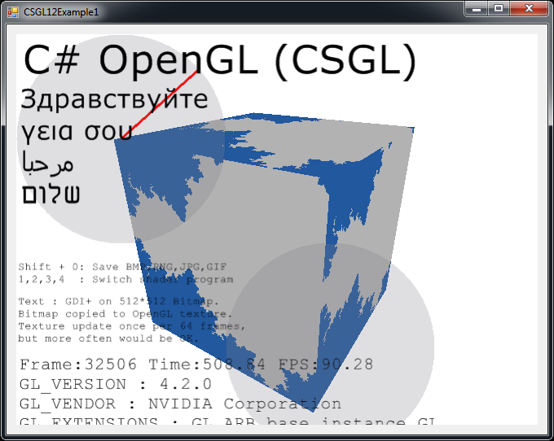
CSGL12Control的Form ，显示出“分形”像素着色器程序，并GDI+绘图复制到纹理
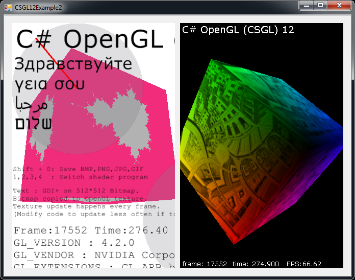
两个CSGL12Control情况的Form ，显示像素着色器程序和纹理
1. 软件
2. 所有C#计算机代码的C# OpenGL接口（ CSGL12 ）是在“公共领域”
我写的所有C#计算机代码的C# OpenGL接口（ CSGL12 ） 。
我宣布所有C#计算机代码的C# OpenGL接口（ CSGL12 ）是在“公共领域” 。
因此，计算机代码可以用于任何目的（商业或私人） ，不用付钱，没有任何限制，没有义务，不承认原作者。
代码可以被修改，或部分重复使用，没有任何限制，也没有义务，不承认原作者。
例子程序，包括少量的计算机代码（具体来说， “shader计算机代码）所写的其他人。” 这些代码不属于自己的界面，可trivially删除。 这些代码只是显示简单的使用界面创建和使用“shader”程序。
3. 导言
“CSGL12”是一家集C#计算机代码文件，实现一个接口的OpenGL图形库（包括所有OpenGL延长至2007年）为Windows操作系统。
计算机代码的C#中的文件“CSGL12”收集可以很容易地添加OpenGL绘图软件的任何C# / .NET与“Form” （一个实例“System.Windows.Forms.Form” ） 。
收集的“CSGL12”计算机代码文件包含一个名为“CSGL12Control.cs” ，它定义了一类名为“CSGL12Control” ，来自“System.Windows.Forms.Control” 。 每个实例“CSGL12Control”代表一个独立的OpenGL绘图区。 这是很容易的添加多个实例CSGL12Control到Form （一个实例System.Windows.Forms.Form ） 。
4. 特点和要求的“CSGL12”
该代码是唯一的Windows操作系统支持.NET 2.0 Framework (Windows 2000, Windows XP, Windows Vista, Windows 7)
该代码可以使用“Microsoft Visual C# 2008 Express Edition”汇编（自由编译） ，或类似的C#汇编。
守则规定正在建造的“[X] Allow unsafe code”建设的选择，以便优化图像数据复制功能都可以使用。 如果你是一个专家C#编程，你将能够很容易地确定部分C#代码，需要“unsafe”选择和禁用如果希望或要求。 图像数据复制是指10倍的速度比使用“unsafe”代码的替代，这就是为什么这样的代码的使用。 如果您建立一个DLL ，其中包含所有的“unsafe”代码，然后一个项目，使用该DLL不需要正在修建的“unsafe”选项，这样您就可以推断，如果没有“unsafe”选择一个项目，并不意味着任何额外安全（因为许多DLL文件用于含蓄或明确的计划包含“不安全的”代码） 。
该代码可以编译和使用的下列任何一种：
Microsoft Visual C# 2008 Express Edition
Microsoft Visual Studio 2008
Microsoft .NET 3.5 SDK
SharpDevelop
Mono Project
代码提供最OpenGL扩展（通过一年2007 ） ，包括“vertex shaders”和“pixel shaders” 。
该法规定1570有关职能OpenGL ：
336 GL functions
51 GLU functions
19 WGL functions
1164 extensions
代码提供了一些替代变异1570功能，不同的参数类型，以方便使用。
代码定义超过3244常数OpenGL 。
该代码可以有多个OpenGL绘制背景下，所有动画，独立于任何“Form” 。
点击“CSGL12Control”给它“投入的重点” ，使随后的键盘和鼠标滚轮的投入。鼠标点击次数和运动时，收到光标的矩形区域内的一个实例“CSGL12Control” 。
包括职能的代码演示如何做一些共同OpenGL任务C#和.NET 。
代码列出了所有OpenGL常数和职能按字母顺序排列在“class GL”在“GL.cs” ，因此很容易，以确定是否任何常数或功能缺失（这是不可能的，除了延长一年后通过2007 ） 。
示例程序显示如何做GDI+即将Bitmap ，然后如何复制的Bitmap的OpenGL纹理。
这使文本和其他GDI+绘图功能作出贡献一OpenGL现场。
该GDI+ Bitmap可以更新和上传到OpenGL纹理作为往往因为一旦百分之OpenGL框架。
示例程序显示如何选择从几个不同的“pixel shader programs”而程序运行。
示例程序显示如何撰写OpenGL缓冲器图像文件（ JPG ， BMP ， GIF ， PNG ） 。
新闻Shift + 0 （移零）写入OpenGL缓冲区图像文件。
示例代码显示如何编译“GL.cs”在一个DLL文件，然后补充说DLL文件到另一个项目中，可以防止Microsoft代码编辑器（例如， Microsoft Visual C# 2008 Express Edition等等） “IntelliSense” （上下文相关的代码完成）成为经常和坚持响应（多次暂停对许多秒钟，使编辑器完全无法使用） 。 在该文件“GL.cs”直接包括在任何项目正在编辑的Microsoft代码编辑器是不切合实际，除非一个人愿意忍受缓慢的编辑器。 这个问题已经影响到Microsoft Visual Studio 2003 ， 2005 ， 2008 ，并可能会影响到2010版本了。
示例代码演示了使用多个实例“CSGL12Control”的“Form” 。
该代码示例包括代码作出3D “化身”的漫游在桌面的Windows 。
5. 示例程序中包含的“CSGL12”
5.1 “CSGL12DLL”
该项目命名为“CSGL12DLL”生产DLL档名为“CSGL12DLL.dll”其中载“class GL” （界定的C#文件“GL.cs” ） 。
把“class GL”在一个DLL文件，然后使用该DLL在其他项目使用“class GL” ，有助于避免极端的问题，所有Microsoft代码编辑与IntelliSense功能。 使用C#文件GL.cs中直接将一个项目造成任何Microsoft代码编辑器的功能与IntelliSense成为完全响应和使用几乎不断由于效率低下， IntelliSense功能（和一个事实，即IntelliSense显然块主程序线程的编辑器） 。
如果您使用的是C#代码编辑器不产生Microsoft （例如， “SharpDevelop” ， “MonoDevelop”等） ，然后您只需包括档案“GL.cs”直接在您的项目，你也不可能获得任何好处使用“CSGL12DLL.dll” 。
5.2 “CSGL12Control”
该项目命名为“CSGL12Control”生产DLL档名为“CSGL12Control.dll”其中载“class CSGL12Control” （界定的C#文件“CSGL12Control.cs” ） 。
把“class CSGL12Control”在一个DLL文件，使这一“Control” （即一类来自“System.Windows.Forms.Control” ）要添加到“Toolbox”的Microsoft Visual C# 2008 Express Edition （和类似C#编辑） 。 在“CSGL12Control”在“Toolbox” ，让一个人购买的一个实例“CSGL12Control”到“Form”在“Designer” （例如，一个人可以简单地使用鼠标拖动选择一个实例“CSGL12Control”从“Toolbox”到“Form” ） 。
管理对象的“CSGL12Control”一个OpenGL绘图方面。 多个实例“CSGL12Control”可以共存的“Form” 。
5.3 “CSGL12Example1”
该项目命名为“CSGL12Example1”产生一个可执行程序文件（ EXE ）命名“CSGL12Example1.exe” 。 程序使用“CSGL12DLL.dll”和“CSGL12Control.dll”展示的一个实例CSGL12Control并提请一个立方体使用OpenGL 。
该计划表明了使用四种不同的“pixel shaders” （ “分形” ， “砖” ， “木” ，和“漫画” ） 。
该计划还表明使用“GDI+” ，一个.NET绘图图书馆，利用文字和其他形状为“Bitmap”对象（一“GDI+”对象） ，然后复制图像数据从“Bitmap”到“texture”在OpenGL ，从而使图像得出由“GDI+”出现在OpenGL绘图。 这种能力是非常有用的，因为OpenGL缺乏许多2D绘图功能在“GDI+”和类似2D图纸libaries 。
5.4 “CSGL12Example2”
该项目命名为“CSGL12Example2”产生一个可执行程序文件（ EXE ）命名“CSGL12Example2.exe” 。 程序使用“CSGL12DLL.dll”和“CSGL12Control.dll”显示的两个实例CSGL12Control ，每个提请一个立方体使用OpenGL 。
该计划有“SplitContainer” “Control”的“Form” 。 这两个地区的“SplitContainer”包含的一个实例CSGL12Control 。 因此，一个人可以调整的立场分歧的两个实例CSGL12Control 。 这体现了灵活性CSGL12Control 。
其中一个实例CSGL12Control发送事件一套事件处理程序中的一个实例“CSGL12Example2Handler1.cs” ，它使用相同的代码作为“CSGL12Example1Handler.cs”在“CSGL12Example1”例如项目。 因此，其中一个实例CSGL12Control提请立方体与一个选定“pixel shader”可从四个“pixel shaders” 。
其他实例CSGL12Control发送事件一套事件处理程序中的一个实例“CSGL12Example2Handler2.cs” ，提请立方体使用纹理图像（或一个“棋盘”格局，如果图像文件名为“image.jpg”没有找到） 。
5.5 “CSGL12Avatar”
该项目命名为“CSGL12Avatar”产生一个可执行程序文件（ EXE ）命名“CSGL12Avatar.exe” 。 程序使用“CSGL12DLL.dll”和“CSGL12Control.dll”提请使用OpenGL一个立方体上“Form”没有边界，同颜色的透明度启用，得出3D “头像”说，漫游在Windows桌面领域。
移动avatar可以点击和拖曳到新的位置使用的光标。 双击avatar将使它消失。 虽然代码只是利用一个立方体， OpenGL可用来吸引其他的东西。
多个实例“头像”程序可以开始。 因此，许多独立的“化身”情况下可以同时漫游的Windows桌面。 这是有趣的。 一位专家C#程序员可以享受寻找途径，以协调活动，许多此类“化身”情况。
不幸的是，利率在该Window对象透明度是在屏幕上的更新是远远低于速度OpenGL可以借鉴。 只有更新的“化身” 10次每秒。 我不知道这是否可以得到改善。
5.6 “CSGL12BuiltExecutableExamplesForReference”
目录命名“CSGL12BuiltExecutableExamplesForReference”包含DLL文件和EXE档案所产生的所有例子项目。 这些文件是提供作为参考，以便文件可以立即进行测试，即使一个人没有能力编制的各种项目从提供C#代码。
5.7 “CSGL12UsefulCode”
目录命名“CSGL12UsefulCode”包含C#档案，可能是有用的人谁想做的事司空见惯绘图行动OpenGL 。 目录还包括DLL档案“CSGL12DLL.dll”和“CSGL12Control.dll”方便。
代码目录中的定义各种class类型，如Color4f ， Vector3f ， Matrix4x4f ， Triangle ， Mesh ， ImageData ， Texture ， ShaderProgram等 该代码是合理有效的，但代码只是为了激发人们开发自己的实现。
6. CSGL12档案
该“CSGL12”收集C#计算机代码的文件包括文件显示在下面的图表：
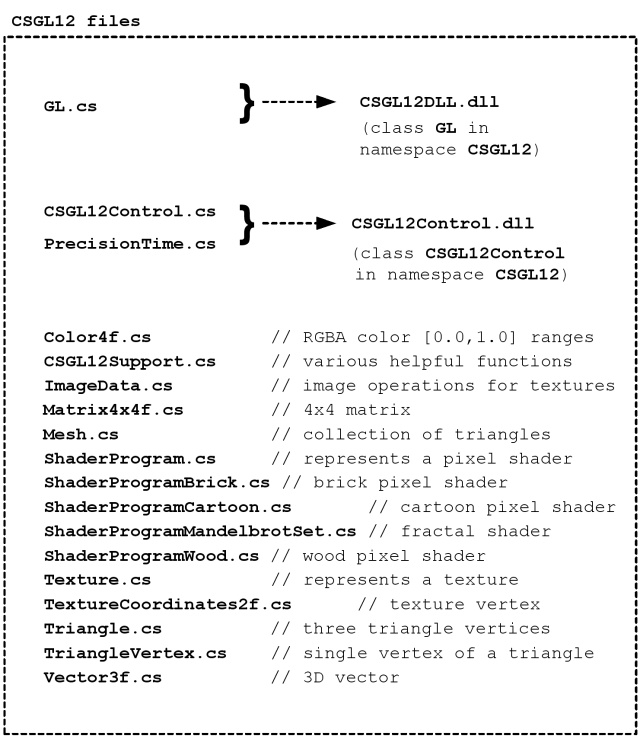
该“CSGL12”收集C#计算机代码的文件包括文件显示在这图。
该软件还包括“CSGL12”项目，以创造两个DLL文件（ “CSGL12DLL.dll”和“CSGL12Control.dll” ）中显示图。 这两个DLL文件可以创造，使其更方便地创建程序，使用OpenGL ，但它也可能创造的程序只使用C#文件直接。
7. “namespace CSGL12”和“class”类型
该“CSGL12”收集C#计算机代码文件定义“namespace CSGL12”和“class”类型显示在下面的图表：
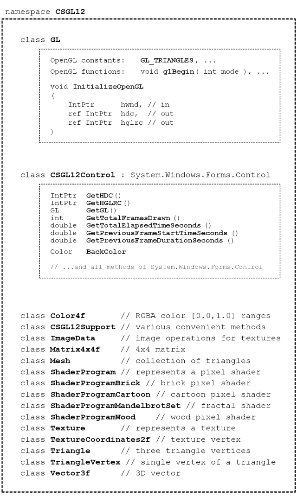
该“CSGL12”收集C#计算机代码文件定义“namespace CSGL12”和“class”类型在此图。
一个程序，它OpenGL图纸可以创造只用“class GL” （使用C#文件GL.cs直接，或通过使用DLL文件CSGL12DLL.dll其中还包含“class GL” ） 。 然而，使用“class CSGL12Control” （使用C#文件CSGL12Control.cs直接，或通过使用DLL文件CSGL12Control.dll其中还包含“class CSGL12Control” ）使得添加OpenGL即将Form （ System.Windows.Forms.Form ）简单方便。
该C#班Color4f ， CSGL12Support ， ImageData ， ... ，底部的图是只提供方便。 这些课程使之更容易创建程序，提请使用OpenGL 。 但是，您可能已经执行的类的业务在这些课程，或您可以选择建立类似的课程，执行不同的业务或更有效率。 这些课程是作为一个特定的例子代码的设计和实施。
8. 使用单一“CSGL12Control”的System.Windows.Forms.Form
8.1 程序结构
下面的图表显示了如何计划与System.Windows.Forms.Form可以使用一个单一的“CSGL12Control”做绘图OpenGL 。 如图所示的各种CSGL12文件用于建设项目。
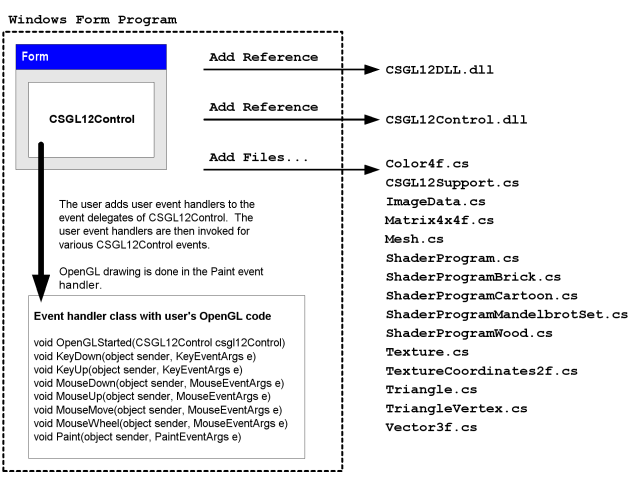
程序使用单一“CSGL12Control”的System.Windows.Forms.Form
8.2 使用Microsoft Visual C#创建计划
(1)开始Microsoft Visual C# 。
(2)在菜单中，选择“File” -> “New Project...” 。
(3)在“New Project”对话框中，选择“Windows Forms Application” ，并选择一个名称的程序，并按下“OK” 。
(4)立即节省“Solution”选择“File” -> “Save All” 。 一个对话框的标题“Save Project”会出现，让您设置项目名称，目录位置，和“解决方案”的项目名称。 记住的目录位置，以便您准备下一指示。 按“Save”按钮，保存该项目。
(5)复制所有文件的目录“CSGL12UsefulCode”在“CSGL12”软件的目录下的源代码文件的新项目（即目录文件“Form1.cs” ， “Form1.Designer.cs” ， “Program.cs”等） ，例如，该文件“CSGL12DLL.dll” ， “CSGL12Control.dll” ， “Color4f.cs” ， “CSGL12Support.cs”等，同时新的项目文件“Form1.cs”等
(6)在Microsoft Visual C# ，添加“CSGL12” C#文件到项目中。 在菜单中，选择“Project” -> “Add Existing Item...” ，并在“Add Existing Item”对话框中，选择所有C#文件从CSGL12软件（ “Color4f.cs” ， “CSGL12Support.cs” ， “ImageData.cs” ， ...).
(7)在Microsoft Visual C# ，添加“引用”的DLL文件“CSGL12DLL.dll”和“CSGL12Control.dll” 。 在菜单中，选择“Project” -> “Add Reference...” ，并在“Add Reference”对话框中，选择“Browse”标签，并选择文件“CSGL12DLL.dll”和“CSGL12Control.dll”从项目源文件的目录，并按下“OK” 。
(8)在Microsoft Visual C# ，添加“CSGL12Control”的“Toolbox” 。 在菜单中，选择“Tools” -> “Choose Toolbox Items...” 。 在“Choose Toolbox Items”对话框中，按下“Browse...”按钮，并转到项目目录的源代码文件，并选择“CSGL12Control.dll” 。 按“OK”按钮。
(9)在Microsoft Visual C# ，查看“Toolbox” 。 在菜单中，选择“View” -> “Toolbox” 。 在“Toolbox” ，去节命名“General” ，并找到了这个项目命名为“CSGL12Control” 。 使用光标，按一下该项目命名为“CSGL12Control”和将其拖放到“Form”在“Design”观点。
(10)在Microsoft Visual C# ，在“Form” “Design”认为，移动“CSGL12Control”例如对“Form”和调整其宽度和高度。 在“Properties”小组，确定了“Anchor”价值包括“Top, Bottom, Left, Right”如果你想控制改变大小根据变化的程序窗口的大小。
(11)在Microsoft Visual C# ，更改项目内容，以便它能够使用“unsafe”代码。 在菜单中，选择“Project” -> “[project] Properties...” 。 选择对话框中，选择标签命名“Build” ，并选中复选框命名“[X] Allow unsafe code” 。 关闭项目属性对话框。
(12)在Microsoft Visual C# ，增加一个新C#文件到项目中。 在菜单中，选择“Project” -> “Add New Item...” 。 在对话框中命名“Add New Item” ，选择模板命名“Class” ，并选择新的名称类类型，如“CSGL12MyHandler.cs” ，然后按“Add”按钮。 看看例如项目命名“CSGL12Example1” ，在同名的文件“CSGL12Example1Handler.cs” ，作为一个例子，如何代码“CSGL12MyHandler.cs”应当书面。
(13)在Microsoft Visual C# ，在“Solution Explorer” ，点击“Form1” 。 在菜单中，选择“View” -> “Code” （或按F7 ，或右键单击“Form1”并选择“View Code” 。 中的代码文件“Form1.cs”将出现在编辑器。 修改代码中的文件“Form1.cs”类似的代码文件中的“CSGL12Example1Form.cs”项目“CSGL12Example1”列入“CSGL12”软件。 特别是，创建一个变量为一个实例类的事件处理程序（例如， “CSGL12MyHandler” ） ，然后添加方法的类实例的事件处理的各种活动的实例“CSGL12Control”的“Form” 。
(14)在Microsoft Visual C# ，编译和执行程序。 如果你想分享的程序，您必须包括两个DLL文件（ “CSGL12DLL.dll”和“CSGL12Control.dll” ）的可执行文件（ *.exe ） 。
如果你是一个专家C#程序员，那么你可以不必分配DLL文件（ “CSGL12DLL.dll”和“CSGL12Control.dll” ）与您的可执行文件（ *.exe ） 。
复制文件“GL.cs” ， “CSGL12Control.cs” ，并“PrecisionTime.cs”从项目命名“CSGL12DLL”和“CSGL12Control”在“CSGL12”软件的源代码目录您当前的项目。 文件添加“GL.cs” ， “CSGL12Control.cs” ，并“PrecisionTime.cs”到您的项目，使他们直接在编译的程序。 没有提及“CSGL12DLL.dll”和“CSGL12Control.dll”项目。
看看“CSGL12Example1”项目“CSGL12”软件，并期待在代码文件命名“CSGL12Example1Form.cs”和“CSGL12Example1Form.Designer.cs”看到代码需要创建和初始化一个实例“CSGL12Control”的“Form” 。 添加类似的代码“Form1.cs”和“Form1.Designer.cs”手动创建和初始化一个实例“CSGL12Control”您“Form” 。
这一程序是非常不方便，而且需要专门知识和认真的关注，但由此产生的可执行文件（ *.exe ）将不需要“CSGL12DLL.dll”或“CSGL12Control.dll” 。 这是非常高兴能够分享您的软件的形式，一个可执行文件（ *.exe ） ，而不需要其他文件。
8.3 添加“引用” CSGL12DLL.dll和CSGL12Control.dll
这部分包括图像使用Microsoft Visual C# 2008 Express Edition添加“提及” DLL文件CSGL12DLL.dll和CSGL12Control.dll到项目中。
在菜单中，选择“Project” -> “Add Reference...” 。 或者，右键单击“References”项目“Solution Explorer”小组，并选择“Add Reference...”所示，下面的图片。
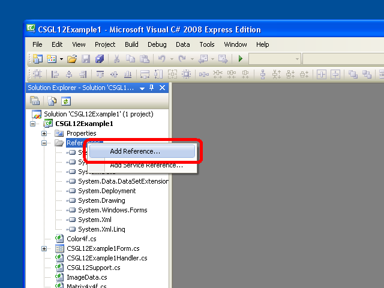
上下文菜单的“References”项目“Solution Explorer” ，显示“Add Reference...”选项
经过选择“Add Reference...”选项，会出现一个对话框命名“Add Reference”将会出现。 在此对话框中，选择“Browse”标签，并选择DLL档案“CSGL12DLL.dll”和“CSGL12Control.dll”所示，下面的图片，然后按下按钮“OK” 。
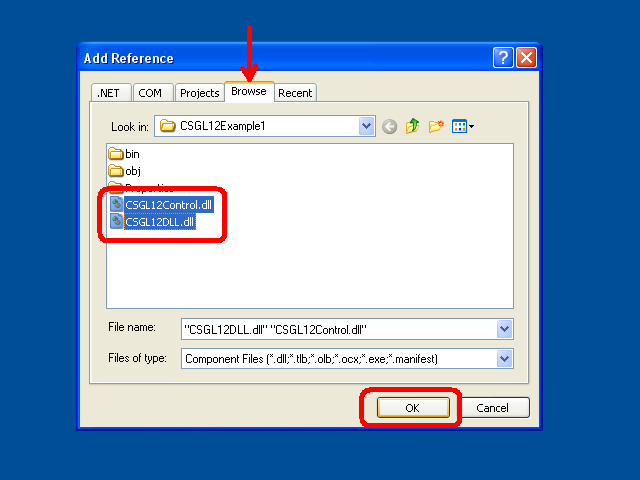
该“Browse”标签“Add Reference”对话框中，与DLL档案“CSGL12DLL.dll”和“CSGL12Control.dll”同时选中
在按下按钮“OK” ，该“Add Reference”对话框就会消失，而且DLL档案“CSGL12DLL.dll”和“CSGL12Control.dll”将会出现在“References”科在“Solution Explorer”所示，下面的图表。
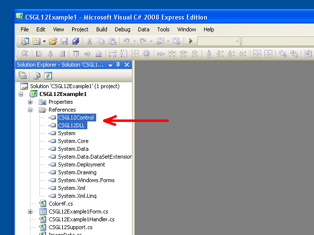
该DLL档案“CSGL12DLL.dll”和“CSGL12Control.dll”在“References”科在“Solution Explorer”
8.4 添加CSGL12Control的Toolbox在Microsoft Visual C# 2008 Express Edition
这部分包括图像使用Microsoft Visual C# 2008 Express Edition添加CSGL12Control的“Toolbox”这样一个人可以方便地添加实例CSGL12Control到“Form”在“Designer” （ Shift+F7默认情况下） 。
在菜单中，选择“View” -> “Toolbox” 。 在“Toolbox” ，去节命名“General”所示，下面的图片。
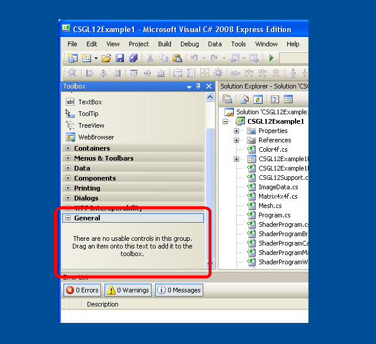
该“General”部分“Toolbox”
右键单击内的任何地方“Toolbox” 。 选择选项“Choose Items...”在出现的上下文菜单中所示，下面的图片。
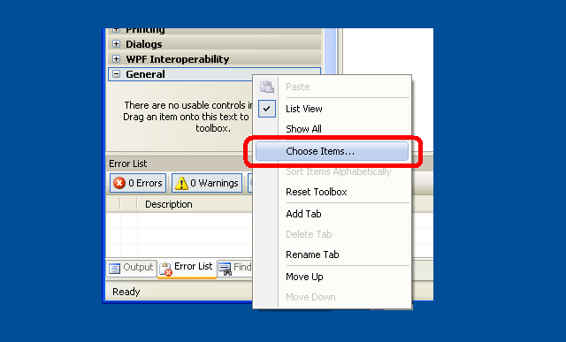
选择“Choose Items...”在上下文菜单的“Toolbox”
另外，在菜单中，选择选择“Tools” -> “Choose Toolbox Items...” 。
该“Choose Toolbox Items”对话框中应该会出现，显示在下面的图片。
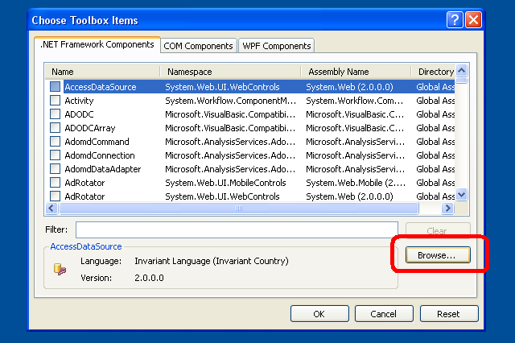
对话框中的“Choose Toolbox Items”
在“Choose Toolbox Items”对话框中，按下“Browse”按钮。 在“Open”对话框中，选择DLL文件“CSGL12Control.dll”所示，下面的图片，然后按“OK”按钮。
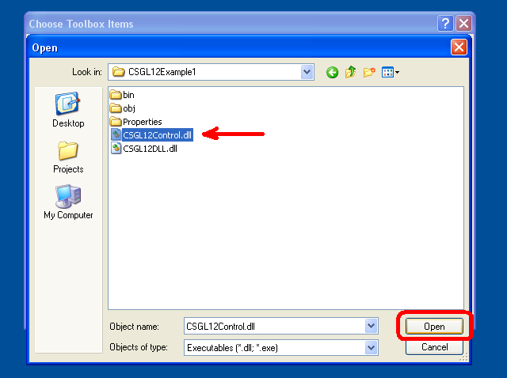
该“Open”对话框中，与DLL文件“CSGL12Control.dll”选定
项目的“CSGL12Control”现在应该出现在“Choose Toolbox Items”对话框所示，下面的图片。 按“OK”按钮。
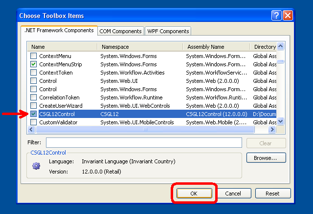
该“CSGL12Control”项目现在出现在“Choose Toolbox Items”对话框
项目的“CSGL12Control”现在应该出现在“Toolbox”所示，下面的图片。
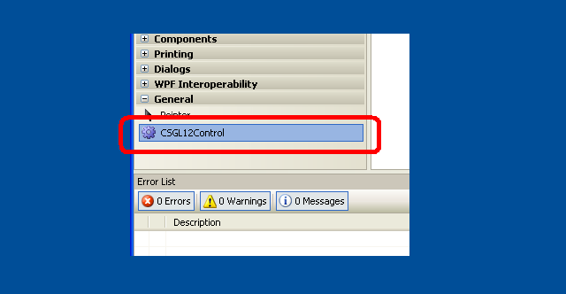
该“CSGL12Control”项目现在出现在“Toolbox”
8.5 添加CSGL12Control到“Form”使用“Toolbox”
这部分包括图像使用Microsoft Visual C# 2008 Express Edition增加的一个实例CSGL12Control到“Form”使用“Toolbox” 。
在菜单中，选择“View” -> “Designer” （ Shift+F7默认情况下） 。 或者，双击“Form*.cs”档案“Solution Explorer” 。 或右键单击一个“Form*.cs”文件中“Solution Explorer”并选择“View Designer” 。 使用这三个方法， “Designer”窗口为“Form”应该会出现。
在菜单中，选择“View” -> “Toolbox” 。 在“Toolbox” ，去节命名“General” 。 一个项目名为“CSGL12Control”应该会出现有所示，下面的图片。
该“CSGL12Control”应该已经在“Toolbox”
使用光标，按一下该项目命名为“CSGL12Control”和将其拖放到“Form”在“Designer” 。 一个实例“CSGL12Control”应该出现在“Form”显示下面的图片。
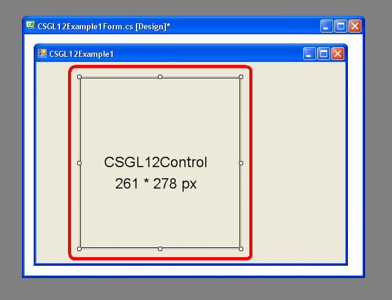
一个实例“CSGL12Control”的“Form”在“Designer”
在“Form” “Designer”认为，此举的实例“CSGL12Control”的“Form”和调整其宽度和高度。
点击实例“CSGL12Control”的“Form”以选中它。 然后，在“Properties”小组，确定了“Anchor”价值包括“Top, Bottom, Left, Right”这样的规模“CSGL12Control”将改变响应变化的程序窗口的大小。 您也可以改变的变量名称（即价值“(Name)” ）为实例“CSGL12Control”自动默认的（例如， “csgL12Control” ）的东西适合您的代码（例如， “mCSGL12Control”或“mCSGL12Control1”等） 。
以下图片显示的“Form” “Designer”观点和“Properties”小组。
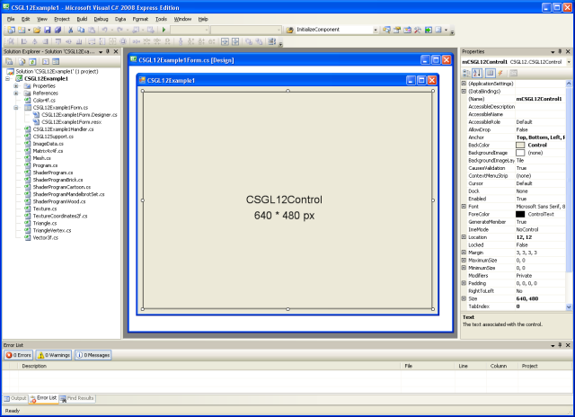
一个实例CSGL12Control的Form在Designer ，和“Properties小组
9. 用两个实例“CSGL12Control”的System.Windows.Forms.Form
下图显示一个例子，说明两个实例“CSGL12Control”可以被添加到System.Windows.Forms.Form做绘图OpenGL程序中。
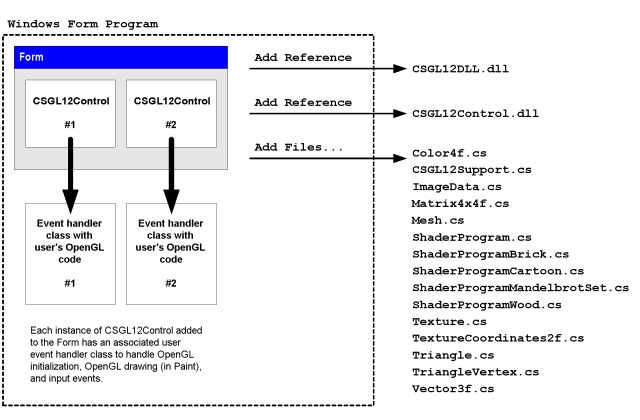
程序使用的两个实例“CSGL12Control”的System.Windows.Forms.Form
按照指示在上一节中添加一个实例“CSGL12Control”到“Form” 。 然后，只需拖动一个第二个实例“CSGL12Control”从“Toolbox”的“Form”添加第二“CSGL12Control” 。
每个实例“CSGL12Control”将拥有自己的变量名。 每个实例“CSGL12Control”可以有自己的相关的事件处理程序类，也可以使用不同情况下的一个单一的处理类类型。
研究项目的例子，以了解如何“CSGL12Example2”两个实例“CSGL12Control”可以有自己的事件发送到两个不同的情况下的自定义事件处理类具有独特OpenGL绘图功能。
示例程序“CSGL12Example2”了每个实例“CSGL12Control”在“SplitContainer” “Control” ，只需证明的方式之一，这些实例“CSGL12Control”都可以使用。 然而，情况不是“CSGL12Control”可以付诸直接的“Form” 。
10. 例如C#代码“Form”同一个实例CSGL12Control
以下是完整的C#代码档案中所包含“CSGL12Example1Form.cs” ，这是部分例子程序“CSGL12Example1” 。
此代码是这里提出一个简单的例子，说明一个实例CSGL12Control可以创建和使用的“Form” 。
using System;
using System.Collections.Generic;
using System.ComponentModel;
using System.Data;
using System.Drawing;
using System.Linq;
using System.Text;
using System.Windows.Forms;
using CSGL12;
namespace CSGL12Example1
{
public partial class CSGL12Example1Form : Form
{
public CSGL12Example1Handler mCSGL12Example1Handler;
private System.Windows.Forms.Timer mTimer;
public CSGL12Example1Form()
{
InitializeComponent();
mCSGL12Example1Handler = new CSGL12Example1Handler();
mCSGL12Control1.OpenGLStarted += new CSGL12Control.DelegateOpenGLStarted( mCSGL12Example1Handler.OpenGLStarted );
mCSGL12Control1.KeyDown += new KeyEventHandler(mCSGL12Example1Handler.KeyDown);
mCSGL12Control1.KeyUp += new KeyEventHandler(mCSGL12Example1Handler.KeyUp);
mCSGL12Control1.MouseDown += new MouseEventHandler(mCSGL12Example1Handler.MouseDown);
mCSGL12Control1.MouseUp += new MouseEventHandler(mCSGL12Example1Handler.MouseUp);
mCSGL12Control1.MouseMove += new MouseEventHandler(mCSGL12Example1Handler.MouseMove);
mCSGL12Control1.MouseWheel += new MouseEventHandler(mCSGL12Example1Handler.MouseWheel);
mCSGL12Control1.Paint += new PaintEventHandler(mCSGL12Example1Handler.Paint);
// Use a timer to trigger drawing at the desired frame rate.
//
// Windows timers are not very precise. Also, if we call wglSwapIntervalEXT(1)
// and we specify in the global OpenGL control panel that OpenGL drawing
// should wait for vertical sync (vsync) of the display, then the frame
// rate would be limited to 60 frames/second or 75 frames/second, for example,
// and our program would have to draw each frame in less than 1/60 seconds
// (16.6 milliseconds) or less than 1/75 seconds (13.3 milliseconds),
// otherwise the drawn frame would be forced to wait one or more full
// frame durations before appearing on the screen. Therefore, it would
// be best to have the timer interval somewhat shorter than a full frame
// interval, to ensure that even if there is a slight delay in responding
// to the timer event we will have at least one timer event per display
// frame interval.
//
// Theoretically, a timer interval of 16 milliseconds would be short enough
// to sustain a frame rate of 62.5 frames/second, and would seemingly have
// a corresponding rate sufficient to sustain 60 frames/second in the case
// of a vertical-sync limited drawing rate for OpenGL. However, in simple
// experiments on a system with a 2.5 GHz Core 2 Duo CPU with an nVidia
// GeForce 8600M GS with 512 MB, I found that a 16-millisecond Windows
// timer interval results in a 33 frames/second OpenGL frame rate (where
// vertical-sync locking is enabled, and the display refresh rate is
// 60 frames/second). So, despite theoretically being slightly more rapid
// than necessary to maintain a 60 frames/second drawing rate, a Windows
// timer with an interval of 16-milliseconds isn't quite rapid enough to
// ensure drawing soon enough to be ready for each display refresh; hence
// the rather significantly lower than desired frame rate of 33 frames/second.
//
// Here are the OpenGL drawing frame rates (limited to 60 Hz vertical sync)
// I observed on a particular computer for particular Windows timer intervals:
//
// 18-millisecond timer interval --> 31 frames/second OpenGL drawing
// 17-millisecond timer interval --> 31 frames/second OpenGL drawing
// 16-millisecond timer interval --> 33 frames/second OpenGL drawing
// 15-millisecond timer interval --> 60 frames/second OpenGL drawing
// 14-millisecond timer interval --> 60 frames/second OpenGL drawing
//
// So, it seems like choosing a Windows timer interval only a couple of
// milliseconds shorter than the theoretical 16.6 millisecond interval
// corresponding to a 60 frames/second rate is enough for this program to
// submit each new frame in time for the next display refresh.
//
// However, computers with slower CPUs or slower GPUs might benefit from
// an even shorter Windows timer interval, to ensure that drawing will
// happen soon enough for the next display refresh.
//
// Some displays are set to refresh at 75 frames/second, which corresponds
// to a frame duration of 13.3 milliseconds. We will aim for this drawing
// rate, and we will subtract a few milliseconds from the Windows timer
// interval to ensure that we receive and process the timer event soon
// enough to submit the frame in time for the next display refresh.
// Meanwhile, we will choose the Windows timer interval such that it isn't
// absurdly short, lest future faster computers actually manage to draw
// at that wasteful rate.
//
// Choosing a Windows timer interval of 10 milliseconds seems like it will
// reliably be able to trigger OpenGL frame drawing in time to keep up with
// a 75 frames/second display (13.3 millisecond frame duration), while
// only causing the OpenGL drawing to happen at a maximum rate of
// 100 frames/second in the unlikely scenario of a very fast computer
// actually being able to draw frames at that rate (given the overhead of
// C#, etc).
mTimer = new System.Windows.Forms.Timer();
mTimer.Interval = 10; // 10-millisecond interval
mTimer.Tick += new EventHandler(PrivateTimerTickEventHandler);
mTimer.Start();
// Set focus to a control so that it can immediately accept input
mCSGL12Control1.Focus();
// Also, whenever the form becomes activated, set focus to the main
// control on the form. The following sets up an event handler for
// that purpose.
this.Activated += new EventHandler(PrivateActivatedEventHandler);
// We want to preview dialog keys (most importantly, the cursor
// keys: up, down, right, left) so we can forward such events to
// the appropriate child control.
this.KeyPreview = true;
}
void PrivateTimerTickEventHandler(object sender, EventArgs e)
{
if (false == DesignMode)
{
mCSGL12Control1.Invalidate();
}
}
private void PrivateActivatedEventHandler(object sender, EventArgs e)
{
// When this form becomes activated, after some time of not
// being active, set input focus to a GL control on the form.
if (false == mCSGL12Control1.Focused)
{
mCSGL12Control1.Focus();
}
}
// Cursor keys (up,down,left,right) need to be specially captured
// and forwarded to the control.
// CAUTION: The KeyPreview property of this Form must be set to 'true'
// for the following method to be called.
protected override bool ProcessDialogKey(Keys keyData)
{
if
(
(keyData == Keys.Up)
¦¦ (keyData == Keys.Down)
¦¦ (keyData == Keys.Left)
¦¦ (keyData == Keys.Right)
)
{
KeyEventArgs e = new KeyEventArgs(keyData);
if (true == mCSGL12Control1.Focused)
{
mCSGL12Example1Handler.KeyDown(mCSGL12Control1, e);
}
else
{
// The CSGL12Control does not have focus.
// Let's simply drop the dialog key event. The user
// may have focus on a different control.
}
return (true);
}
return base.ProcessDialogKey(keyData);
}
}
}
请注意，该成员变量“mCSGL12Example1Handler”宣布提及的一个实例class命名“CSGL12Example1Handler” 。 这一类将在随后的叙述部分。 请注意，构造“CSGL12Example1Form”增加了方法的实例“CSGL12Example1Handler”的“multicast delegates”相关的各种活动所产生的一个实例“CSGL12Control” 。 这意味着当实例“CSGL12Control”产生的各种事件，这些事件会导致各种方法的实例“CSGL12Example1Handler” （即“mCSGL12Example1Handler” ）援引。
请注意，该成员变量“mTimer”宣布提及的一个实例class命名“System.Windows.Forms.Timer” 。 这个对象是用来调用一个函数命名“PrivateTimerTickEventHandler”每10毫秒。 命名“PrivateTimerTickEventHandler”的功能要求的一种方法的实例“CSGL12Control” （即“mCSGL12Control1” ）的原因“Control”利用本身。 这是怎样的一个实例动画“CSGL12Control”可以在近似率。
只有部分的定义“class CSGL12Example1Form”出现在C#档名为“CSGL12Example1Form.cs” 。 另一部分的定义“class CSGL12Example1Form”出现在C#档名为“CSGL12Example1Form.Designer.cs” 。 虽然文件名称相匹配的模式“*.Designer.cs”通常创建和修改只能由图形“Form Designer”窗口的C#编辑器，还可以创建和修改等C#文件使用文本编辑器。
以下是完整的C#代码档案中所包含“CSGL12Example1Form.Designer.cs” ，这是部分例子程序“CSGL12Example1” 。
namespace CSGL12Example1
{
partial class CSGL12Example1Form
{
/// <summary>
/// Required designer variable.
/// </summary>
private System.ComponentModel.IContainer components = null;
/// <summary>
/// Clean up any resources being used.
/// </summary>
/// <param name="disposing">true if managed resources should be disposed; otherwise, false.</param>
protected override void Dispose(bool disposing)
{
if (disposing && (components != null))
{
components.Dispose();
}
base.Dispose(disposing);
}
#region Windows Form Designer generated code
/// <summary>
/// Required method for Designer support - do not modify
/// the contents of this method with the code editor.
/// </summary>
private void InitializeComponent()
{
this.mCSGL12Control1 = new CSGL12.CSGL12Control();
this.SuspendLayout();
//
// mCSGL12Control1
//
this.mCSGL12Control1.Anchor = ((System.Windows.Forms.AnchorStyles)
((((System.Windows.Forms.AnchorStyles.Top
¦ System.Windows.Forms.AnchorStyles.Bottom)
¦ System.Windows.Forms.AnchorStyles.Left)
¦ System.Windows.Forms.AnchorStyles.Right)));
this.mCSGL12Control1.BackColor = System.Drawing.SystemColors.Control;
this.mCSGL12Control1.Location = new System.Drawing.Point(12, 12);
this.mCSGL12Control1.Name = "mCSGL12Control1";
this.mCSGL12Control1.Size = new System.Drawing.Size(640, 480);
this.mCSGL12Control1.TabIndex = 0;
this.mCSGL12Control1.Text = "CSGL12Control1";
//
// CSGL12Example1Form
//
this.AutoScaleDimensions = new System.Drawing.SizeF(6F, 13F);
this.AutoScaleMode = System.Windows.Forms.AutoScaleMode.Font;
this.ClientSize = new System.Drawing.Size(664, 504);
this.Controls.Add(this.mCSGL12Control1);
this.Name = "CSGL12Example1Form";
this.Text = "CSGL12Example1";
this.ResumeLayout(false);
}
#endregion
private CSGL12.CSGL12Control mCSGL12Control1;
}
}
请注意，此C#代码中包含的声明变量“mCSGL12Control1” ，其中提到的一个实例“class CSGL12.CSGL12Control” （即“class CSGL12Control”在“namespace CSGL12” ） 。 这种情况下创建和配置的功能“InitializeComponent” 。
11. 处理事件所援引的一个实例CSGL12Control
上一节显示C#代码“Form”所载的一个实例“CSGL12Control” 。 该C#代码添加方法的“class”命名“CSGL12Example1Handler”作为事件处理的各种活动所产生的实例“CSGL12Control” 。
下面列出了有趣的活动的“CSGL12Control” ，和“delegate”类型与这些事件：
OpenGLStarted CSGL12Control.DelegateOpenGLStarted
KeyDown System.Windows.Forms.KeyEventHandler
KeyUp System.Windows.Forms.KeyEventHandler
MouseDown System.Windows.Forms.MouseEventHandler
MouseUp System.Windows.Forms.MouseEventHandler
MouseMove System.Windows.Forms.MouseEventHandler
MouseWheel System.Windows.Forms.MouseEventHandler
Paint System.Windows.Forms.PaintEventHandler
只有“OpenGLStarted”事件是一个事件类型所特有的“CSGL12Control” 。
所有其他活动的标准System.Windows.Forms事件，其事件处理必须有一定的参数（所指定的任何Forms文件） 。
该“OpenGLStarted”和“Paint”事件是最重要的事件OpenGL图纸。
该“OpenGLStarted”事件是引用前非常第一“Paint”事件是引用。
因此， “OpenGLStarted”事件处理程序必须添加到控制前，控制有很好的机会，企图涂料本身，否则一时间，事件将不会收到。
这一事件仅仅是一个方便，可以忽略不计。
但是，加入一个处理此事件使得有可能为处理代码做一些一时间初始化这取决于OpenGL正准备使用。
（ OpenGL不能使用，直至窗口存在和窗口，是随时准备履行其第一油漆。
因此， “OpenGLStarted”事件零部件程序员从风险企图利用OpenGL太后不久，该程序将启动。
）这是相当容易购买的逻辑在“Paint”处理做一次性初始化，使用OpenGL背景下“CSGL12Control” 。
该“OpenGLStarted”事件是作为一个提供方便。
以下是完整的C#代码档案中所包含“CSGL12Example1Handler.cs” ，这是部分例子程序“CSGL12Example1” 。
此代码是这里提出一个简单的例子，说明所产生的事件的一个实例“CSGL12Control”可处理提请使用OpenGL 。
using System;
using System.Collections.Generic;
using System.Text;
using System.IO;
using System.Windows.Forms;
using System.Drawing;
using System.Drawing.Imaging;
// This program requires "references" to the following:
//
// CSGL12DLL.dll (defines CSGL12.GL)
// CSGL12Control.dll (defines CSGL12.CSGL12Control)
using CSGL12;
namespace CSGL12Example1
{
public class CSGL12Example1Handler
{
private Mesh mMesh;
private ShaderProgram mShaderProgram1;
private ShaderProgram mShaderProgram2;
private ShaderProgram mShaderProgram3;
private ShaderProgram mShaderProgram4;
private ShaderProgram mShaderProgramSelected;
private Bitmap mHUDBitmap;
private Texture mHUDTexture;
private Font mFont1;
private Font mFont2;
private Font mFont3;
private Font mFont4;
private Pen mPen1;
private Brush mBrush1;
private double mViewDistance = 800.0;
private double mViewAzimuthDegrees = 0.0;
private double mViewAltitudeDegrees = 0.0;
private double mViewAzimuthDegreesVelocity = 9.0;
private double mViewAltitudeDegreesVelocity = 5.0;
private Point mMouseClientPositionStart;
private double mViewAzimuthDegreesStart = 0.0;
private double mViewAltitudeDegreesStart = 0.0;
public CSGL12Example1Handler()
{
mMesh = new Mesh();
mShaderProgram1 = new ShaderProgramMandelbrotSet();
mShaderProgram2 = new ShaderProgramWood();
mShaderProgram3 = new ShaderProgramBrick();
mShaderProgram4 = new ShaderProgramCartoon();
mShaderProgramSelected = mShaderProgram1;
mHUDBitmap = new Bitmap(512, 512, System.Drawing.Imaging.PixelFormat.Format32bppArgb);
mHUDTexture = new Texture();
mFont1 = new Font("Verdana", 36.0f);
mFont2 = new Font("Verdana", 24.0f);
mFont3 = new Font("Courier New", 16.0f);
mFont4 = new Font("Courier New", 10.0f);
mPen1 = new Pen(Color.Red, 3.0f);
mBrush1 = new SolidBrush(Color.FromArgb(64, 128, 128, 140));
}
public void OpenGLStarted( CSGL12Control csgl12Control )
{
GL gl = csgl12Control.GetGL();
if (null == gl) { return; }
// Load shaders and set variables
if (true == gl.bglCreateProgramObjectARB)
{
if (null != mShaderProgram1)
{
mShaderProgram1.ShaderProgramCreate(gl);
}
if (null != mShaderProgram2)
{
mShaderProgram2.ShaderProgramCreate(gl);
}
if (null != mShaderProgram3)
{
mShaderProgram3.ShaderProgramCreate(gl);
}
if (null != mShaderProgram4)
{
mShaderProgram4.ShaderProgramCreate(gl);
}
}
// Create cube mesh
mMesh = new Mesh();
mMesh.BuildCube(400.0f);
// Create a texture
mHUDTexture.CreateTextureFromBitmap(gl, mHUDBitmap, true);
// To prevent "tearing" (irregular streaks) due to swapping buffers at
// arbitrary times relative to the vsync times, we indicate that we wish
// to wait for vsync before swapping buffers.
// This request applies when the display driver control panel -- in the
// OpenGL settings area -- is set to let the application decide whether or
// not to wait for vsync. Otherwise, the driver control panel overrides
// any request made here.
if (true == gl.bwglSwapIntervalEXT)
{
gl.wglSwapIntervalEXT(1);
}
}
public void Paint(object sender, PaintEventArgs e)
{
if (null == sender) { return; }
if (false == (sender is CSGL12Control)) { return; }
CSGL12Control csgl12Control = (sender as CSGL12Control);
GL gl = csgl12Control.GetGL();
int clientWidth = csgl12Control.ClientRectangle.Width;
int clientHeight = csgl12Control.ClientRectangle.Height;
if (clientWidth <= 0)
{
clientWidth = 1;
}
if (clientHeight <= 0)
{
clientHeight = 1;
}
// Set the viewport
gl.glViewport(0, 0, clientWidth, clientHeight);
// Clear the viewport
gl.glClearColor(1.0f, 1.0f, 1.0f, 1.0f);
gl.glClear(GL.GL_COLOR_BUFFER_BIT ¦ GL.GL_DEPTH_BUFFER_BIT);
// Basic drawing conditions
gl.glEnable(GL.GL_DEPTH_TEST);
gl.glDepthFunc(GL.GL_LEQUAL);
gl.glEnable(GL.GL_CULL_FACE);
gl.glCullFace(GL.GL_BACK);
gl.glFrontFace(GL.GL_CCW);
// PROJECTION matrix, typically for perspective correction or orthographic projection
gl.glMatrixMode(GL.GL_PROJECTION);
gl.glLoadIdentity();
double aspectRatio = 1.0;
if (0 != clientHeight)
{
aspectRatio = ((double)(clientWidth) / (double)(clientHeight));
}
double verticalFieldOfViewAngle = 60.0;
gl.gluPerspective
(
verticalFieldOfViewAngle, // Field of view angle (Y angle; degrees)
aspectRatio, // width/height
0.1, // distance to near clipping plane
64000.0 // distance to far clipping plane
);
// MODELVIEW matrix, typically used to transform individual models
gl.glMatrixMode(GL.GL_MODELVIEW);
gl.glLoadIdentity();
// Preserve current matrix for the active matrix stack (in this case the MODELVIEW matrix)
gl.glPushMatrix();
if (mViewAltitudeDegreesVelocity != 0.0)
{
if (mViewAltitudeDegrees > 70.0)
{
mViewAltitudeDegrees = 70.0;
mViewAltitudeDegreesVelocity *= -1.0;
}
else if (mViewAltitudeDegrees < -70.0)
{
mViewAltitudeDegrees = -70.0;
mViewAltitudeDegreesVelocity *= -1.0;
}
mViewAzimuthDegrees += mViewAzimuthDegreesVelocity * csgl12Control.GetPreviousFrameDurationSeconds();
mViewAltitudeDegrees += mViewAltitudeDegreesVelocity * csgl12Control.GetPreviousFrameDurationSeconds();
}
Vector3f from =
new Vector3f
(
(float)(mViewDistance * Math.Cos(mViewAltitudeDegrees * (Math.PI / 180.0)) * Math.Sin(mViewAzimuthDegrees * (Math.PI / 180.0))),
(float)(mViewDistance * Math.Sin(mViewAltitudeDegrees * (Math.PI / 180.0))),
(float)(mViewDistance * Math.Cos(mViewAltitudeDegrees * (Math.PI / 180.0)) * Math.Cos(mViewAzimuthDegrees * (Math.PI / 180.0)))
);
Vector3f to = new Vector3f(0.0f, 0.0f, 0.0f);
Vector3f up = new Vector3f(0.0f, 1.0f, 0.0f);
Matrix4x4f camera = Matrix4x4f.LookAt(from, to, up);
float[] matrix = new float[16];
matrix[0] = camera.m11;
matrix[1] = camera.m21;
matrix[2] = camera.m31;
matrix[3] = 0.0f;
matrix[4] = camera.m12;
matrix[5] = camera.m22;
matrix[6] = camera.m32;
matrix[7] = 0.0f;
matrix[8] = camera.m13;
matrix[9] = camera.m23;
matrix[10] = camera.m33;
matrix[11] = 0.0f;
matrix[12] = camera.m14;
matrix[13] = camera.m24;
matrix[14] = camera.m34;
matrix[15] = 1.0f;
gl.glMultMatrixf(matrix);
if (mShaderProgramSelected != null)
{
mShaderProgramSelected.DemonstrateModificationOfVariables(gl, csgl12Control.GetPreviousFrameStartTimeSeconds(), csgl12Control.GetPreviousFrameDurationSeconds());
mShaderProgramSelected.Select(gl);
}
// Draw model(s), using active texture or shader
mMesh.Draw(gl);
// If we used a shader, disable it now...
if (true == gl.bglUseProgramObjectARB)
{
ShaderProgram.ShaderProgram_Select(gl, 0);
}
// Restore the previously-preserved matrix for the active matrix stack (in this case the MODELVIEW matrix)
gl.glPopMatrix();
// Demonstrate drawing text to a GDI+ Bitmap and then copying to
// an OpenGL texture.
DemonstrateDrawingTextToAGDIBitmapAndCopyingToAnOpenGLTexture(csgl12Control, gl);
// Flush all the current rendering and flip the back buffer to the front.
gl.wglSwapBuffers(csgl12Control.GetHDC());
}
public void DemonstrateDrawingTextToAGDIBitmapAndCopyingToAnOpenGLTexture(CSGL12Control csgl12Control, GL gl)
{
bool updateOverlayImage = false;
// The following code only enables an update of the Bitmap
// and OpenGL texture every 64 frames, thus avoiding the
// slowdown of performing updates every single frame.
// HOWEVER, updating the Bitmap and OpenGL texture can be
// done EVERY frame with acceptable speed.
// Updates should be limited to once per frame, but the
// logic to trigger updates can be based on when the relevant
// text changes.
if ((csgl12Control.GetTotalFramesDrawn() % 64) == 0)
{
updateOverlayImage = true;
}
bool showOverlayImage = true;
if (true == updateOverlayImage)
{
using (Graphics g = Graphics.FromImage(mHUDBitmap))
{
g.Clear(Color.FromArgb(0, Color.White));
g.FillEllipse(mBrush1, new Rectangle(0, 0, 256, 256));
g.FillEllipse(mBrush1, new Rectangle(256, 256, 256, 256));
PointF center = new PointF(0.5f * (256.0f + 0.0f), 0.5f * (256.0f + 0.0f));
PointF displacement = new PointF();
double fraction = csgl12Control.GetTotalElapsedTimeSeconds() * 0.1;
displacement.X = 128.0f * (float)Math.Cos(2.0 * Math.PI * fraction);
displacement.Y = 128.0f * (float)Math.Sin(2.0 * Math.PI * fraction);
g.DrawLine(mPen1, center, new PointF(center.X + displacement.X, center.Y + displacement.Y));
PointF carat = new PointF(0.0f, 0.0f);
String text = "";
text = "C# OpenGL (CSGL)";
g.DrawString(text, mFont1, Brushes.Black, carat);
carat.Y += mFont1.GetHeight();
text = "Здравствуйте";
g.DrawString(text, mFont2, Brushes.Black, carat);
carat.Y += mFont2.GetHeight();
text = "γεια σου";
g.DrawString(text, mFont2, Brushes.Black, carat);
carat.Y += mFont2.GetHeight();
text = "مرحبا";
g.DrawString(text, mFont2, Brushes.Black, carat);
carat.Y += mFont2.GetHeight();
text = "שלום";
g.DrawString(text, mFont2, Brushes.Black, carat);
carat.Y += mFont2.GetHeight();
carat.Y += 64.0f;
text = "Shift + 0: Save BMP,PNG,JPG,GIF";
g.DrawString(text, mFont4, Brushes.Black, carat);
carat.Y += mFont4.GetHeight();
text = "1,2,3,4 : Switch shader program";
g.DrawString(text, mFont4, Brushes.Black, carat);
carat.Y += mFont4.GetHeight();
carat.Y += 12.0f;
text = "Text : GDI+ on 512*512 Bitmap.";
g.DrawString(text, mFont4, Brushes.Black, carat);
carat.Y += mFont4.GetHeight();
text = "Bitmap copied to OpenGL texture.";
g.DrawString(text, mFont4, Brushes.Black, carat);
carat.Y += mFont4.GetHeight();
text = "Texture update once per 64 frames,";
g.DrawString(text, mFont4, Brushes.Black, carat);
carat.Y += mFont4.GetHeight();
text = "but more often would be OK.";
g.DrawString(text, this.mFont4, Brushes.Black, carat);
carat.Y += this.mFont4.GetHeight();
carat.Y += 12.0f;
text = String.Format("Frame:{0}", csgl12Control.GetTotalFramesDrawn());
text += " ";
text += String.Format("Time:{0:f2}", csgl12Control.GetTotalElapsedTimeSeconds());
double previousFrameDurationSeconds =
csgl12Control.GetPreviousFrameDurationSeconds();
if (previousFrameDurationSeconds > 1.0e-10)
{
double framesPerSecondOverall =
1.0 / previousFrameDurationSeconds;
text += " ";
text += String.Format("FPS:{0:f2}", framesPerSecondOverall );
}
g.DrawString(text, mFont3, Brushes.Black, carat);
carat.Y += mFont3.GetHeight();
}
mHUDTexture.UpdateTextureWithBitmapData(gl, mHUDBitmap);
}
if (true == showOverlayImage)
{
CSGL12Support.SupportDrawTextureImageUnrotatedAndOrthographically
(
gl,
csgl12Control.ClientSize.Width,
csgl12Control.ClientSize.Height,
mHUDTexture,
0,
0, // i.e., 0 == draw TOP of image at TOP of viewport, Y-axis points DOWN
mHUDTexture.GetWidth(), // glControl.ClientSize.Width, // mHUDTexture.GetWidth(),
mHUDTexture.GetHeight() // glControl.ClientSize.Height // mHUDTexture.GetHeight()
);
}
}
public void KeyDown(object sender, KeyEventArgs e)
{
if (null == sender) { return; }
if (false == (sender is CSGL12Control)) { return; }
CSGL12Control csgl12Control = (sender as CSGL12Control);
GL gl = csgl12Control.GetGL();
if (e.KeyCode == Keys.A)
{
}
if (e.KeyCode == Keys.Z)
{
}
if (e.KeyCode == Keys.D1)
{
mShaderProgramSelected = mShaderProgram1;
}
if (e.KeyCode == Keys.D2)
{
mShaderProgramSelected = mShaderProgram2;
}
if (e.KeyCode == Keys.D3)
{
mShaderProgramSelected = mShaderProgram3;
}
if (e.KeyCode == Keys.D4)
{
mShaderProgramSelected = mShaderProgram4;
}
// NOTE: The only way for cursor key events (up,down,left,right)
// to make it to this function is for the main form to implement
// the following:
//
// protected override bool ProcessDialogKey ( Keys keyData )
//
// and explicitly invoke this KeyDown() method with the
// an appropriately formed KeyEventArgs instance.
if (e.KeyCode == Keys.Up)
{
mViewDistance -= 10.0;
}
if (e.KeyCode == Keys.Down)
{
mViewDistance += 10.0;
}
if (e.KeyCode == Keys.Left)
{
mViewAzimuthDegrees += 1.0;
}
if (e.KeyCode == Keys.Right)
{
mViewAzimuthDegrees -= 1.0;
}
// Save an image of the viewport (press Shift-0 (zero)). The following
// code writes out the viewport in the following image formats: BMP, PNG, GIF, JPG.
// If you only want a single format, comment out the other file write commands.
// BMP has no compression artifacts, but the file can be quite large.
// PNG looks good, and supports 8-bit transparancy (good for textures, etc).
// GIF looks bad unless you build the color table intelligently (there is a
// neural network color table builder for GIF, in C#/.NET, that you can
// find on the Internet; perhaps Paint.NET uses that code); but GIF files
// can be quite small, and supports animation.
// JPG looks good under most circumstances, and the file size can be quite small,
// but transparency is not supported.
// So, for pixel-perfect images, where file size is not important, BMP might be appropriate.
// For textures with transparency, PNG might be appropriate.
// For good-looking images, and small file size, and use in Web pages, JPG might be appropriate.
// For some purposes, with small file sizes, and use in Web pages, GIF might be appropriate.
if ((e.KeyCode == Keys.D0) && (e.Shift == true))
{
DateTime now = DateTime.Now;
String dateTimeString = String.Format("{0:d4}{1:d2}{2:d2}{3:d2}{4:d2}{5:d2}{6:d3}", now.Year, now.Month, now.Day, now.Hour, now.Minute, now.Second, now.Millisecond);
String frameIndexString = String.Format("{0:d6}", csgl12Control.GetTotalFramesDrawn());
String fileNameWithoutExtension = "screen" + "_" + dateTimeString + "_" + frameIndexString;
CSGL12Support.SupportWriteViewportToImageFile(gl, fileNameWithoutExtension + ".bmp", System.Drawing.Imaging.ImageFormat.Bmp);
CSGL12Support.SupportWriteViewportToImageFile(gl, fileNameWithoutExtension + ".png", System.Drawing.Imaging.ImageFormat.Png);
CSGL12Support.SupportWriteViewportToImageFile(gl, fileNameWithoutExtension + ".gif", System.Drawing.Imaging.ImageFormat.Gif);
CSGL12Support.SupportWriteViewportToImageFile(gl, fileNameWithoutExtension + ".jpg", System.Drawing.Imaging.ImageFormat.Jpeg);
}
}
public void KeyUp(object sender, KeyEventArgs e)
{
}
public void MouseDown(object sender, MouseEventArgs e)
{
if (null == sender) { return; }
if (false == (sender is CSGL12Control)) { return; }
CSGL12Control csgl12Control = (sender as CSGL12Control);
mMouseClientPositionStart = csgl12Control.PointToClient(Cursor.Position);
mViewAzimuthDegreesStart = mViewAzimuthDegrees;
mViewAltitudeDegreesStart = mViewAltitudeDegrees;
if ((e.Button & MouseButtons.Left) == MouseButtons.Left)
{
mViewAzimuthDegreesVelocity = 0.0;
mViewAltitudeDegreesVelocity = 0.0;
}
if ((e.Button & MouseButtons.Right) == MouseButtons.Right)
{
mViewAzimuthDegreesVelocity = 9.0;
mViewAltitudeDegreesVelocity = 5.0;
}
}
public void MouseUp(object sender, MouseEventArgs e)
{
if ((e.Button & MouseButtons.Right) == MouseButtons.Right)
{
}
}
public void MouseMove(object sender, MouseEventArgs e)
{
if (null == sender) { return; }
if (false == (sender is CSGL12Control)) { return; }
CSGL12Control csgl12Control = (sender as CSGL12Control);
Point mouseClientPositionCurrent = csgl12Control.PointToClient(Cursor.Position);
if ((e.Button & MouseButtons.Left) == MouseButtons.Left)
{
double azimuth =
mViewAzimuthDegreesStart
- (360.0 / (double)(csgl12Control.Width + 1))
* (double)(mouseClientPositionCurrent.X - mMouseClientPositionStart.X);
double altitude =
mViewAltitudeDegreesStart
+ (180.0 / (double)(csgl12Control.Height + 1))
* (double)(mouseClientPositionCurrent.Y - mMouseClientPositionStart.Y);
double epsilon = 0.05;
if (azimuth < (-180 + epsilon)) { azimuth = (-180 + epsilon); }
if (azimuth > (180 - epsilon)) { azimuth = (180 - epsilon); }
if (altitude < (-90 + epsilon)) { altitude = (-90 + epsilon); }
if (altitude > (90 - epsilon)) { altitude = (90 - epsilon); }
mViewAzimuthDegrees = azimuth;
mViewAltitudeDegrees = altitude;
}
}
public void MouseWheel(object sender, MouseEventArgs e)
{
mViewDistance -= 0.1 * (double)e.Delta;
}
}
}
请注意，该功能是用来命名“OpenGLStarted”在这个例子中，创造“pixel shader programs”和OpenGL纹理。 针对此计划，我们只需要创建这些资源的一次，这是更有效地创造他们只有一次。
请注意，该功能的代码名为“OpenGLStarted”检查如果WGL “extension”功能命名“wglSwapIntervalEXT()”存在，如果该函数不存在，该代码调用该函数。 该函数设置一个国家，影响到的运作程序在整个会议期间，所以我们只需要调用该函数一次，这就是为什么我们试图调用功能的“OpenGLStarted”功能（这本身就是一次只能援引时的OpenGL开始为特定的“CSGL12Control” ，假设我们添加了“OpenGLStarted”方法，适当的活动代表） 。
函数命名“Paint”包含的所有代码提请单一“框架”的动画使用OpenGL 。 该“Paint”功能将被称为也许60次每秒，这是由于相关的“CSGL12Control”例如正在“无效” （被迫动用本身再次）在这个速度。 （看看“Form”代码示例在上一节看到计时器决定“无效”的速度和实际函数调用，从而导致个体“CSGL12Control”成为“无效” 。 ）
所有OpenGL职能是援引使用的一个实例“class GL” （例如： gl.gl*() ） 。 实例“class GL”是获得实例“CSGL12Control” ，这是含蓄地存放在第一个参数的“Paint”功能。
所有OpenGL常数可以指定指定“class”名称“GL”随后点和名称不变，即“GL.GL_TRIANGLES” 。
该OpenGL代码在这个例子中并不完全明显，易于理解，但希望您能认识到的代码可以修改为自己的目的。
12. 检查是否有“延长”作用OpenGL
只要勾选如果布尔国旗的相同名称的OpenGL功能是“真的” ，再尝试使用相应的功能。
布尔变量有一个名字，首先“b”其次是OpenGL函数名称。
if (true == gl.bglCreateProgramObjectARB)
{
// glCreateProgramObjectARB() exists and can be invoked.
// Also, because that function is related to pixel shaders, it is very
// likely that other functions that are required for the use of pixel
// shaders also exist and can be invoked.
// . . .
}
检查只需要“扩展”功能。
OpenGL 1.1职能，以及所有GLU职能，核心WGL功能，并不需要这样的检查。 然而，布尔国旗是存在的，并且设置适当的，所有这些功能提供了“class GL” ，包括核心OpenGL 1.1职能。 因此，一致的方式来检查是否所有职能类别。
了解是否有功能的“延伸”的责任是程序员。
不过，函数名称后缀，如“EXT” ， “ARB” ， “MESA” ， “NV” (NVidia) ， “APPLE”等，有助于说明延期的职能。
如果一个函数“gl*()”有一个邻国的功能“gl*ARB()”或“gl*NV()” ，然后功能gl*()可能是延长（据该Windows OPENGL32.DLL而言） 。
唯一的优势，不知或没有的功能是一个“扩展” （与尊重向Windows OPENGL32.DLL ）是能够避免检查，如果职能是提供。
您可以搜索所有OpenGL职能，用在您的代码，然后建立一个按字母顺序排列的名单不同的职能。
然后，在您的程序开始后， CSGL12Control调用OpenGLStarted代表，只要勾选所有布尔国旗的所有功能您打算使用。
如果您选择终止该程序，如果任何“所需的”职能是失踪的，那么所有的检查等功能，在代码可以被淘汰。
另外，您也可以组成一个小组的非基本职能，在检查，并在可能的告知用户，任何功能的变化，并在可能的离开检查分散在代码中。
更多OpenGL的经验，您可以得到什么样的意识，扩展相关的（例如：影像处理系统，着色器，缓冲器，压缩， ...).
因此，您可以检查存在一个单一的重要功能和使用该信息，以决定是否整个子很可能出席。
13. 速度
由于种种原因， C#是慢non-CLR C/C++ 。
C#最终编译到本地汇编语言，就如同为C/C++ ，但是，由于保证所作的C#语言和.NET CLR ，整体速度的软件基础C#和.NET有点慢于软件采用non-CLR C/C++ 。
因此，获得最高速度可能的手段使用non-CLR C/C++不是C# 。
此外，由于要求任何本土图书馆从C#涉及P/Invoke ，引用功能，例如作为OpenGL职能，将需要一些时间执行工作中的P/Invoke层。
尽管如此， “CSGL12”似乎工作不够迅速，可用于许多实时图形化的目的，如简单的游戏，三维浏览，编辑，或三维演示。 尤其是如果大部分工作是由GPU不是CPU 。
14. 比较“CSGL12”和“Tao Framework”
该“Tao Framework”是一家大型C# / .NET库，提供了一个界面，许多开放源代码库，如OpenGL ， OpenAL （音频） ， SDL （游戏/仿真平台） ， Open Dynamics Engine (ODE) （物理）等
该Tao Framework是跨平台的(Windows, Linux, Mac OS X) 。
“CSGL12”只提供一个接口， OpenGL ，并只用于Windows操作系统。
该Tao Framework有一个社区。 一个人可以从中受益，与用户沟通的Tao Framework 。
然而，可能有许多用途的“CSGL12”可能更容易使用的Windows程序。